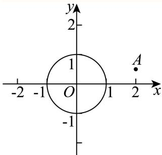

01 【来源：长宁25二模·2】
复数 ，，则 ______。
答案与解析
答案
8 +i
解析
由 ，得 。
所以 。
FY27高数功底考 · 教师版 · 本专题 20 题
旧版 PDF 尚未同步近期校订，已暂停下载；请用打印／保存本专题 PDF 导出当前网页。教师版含答案与解析。
没有匹配的题目，请更换关键词或清空搜索。
复数 ，，则 ______。
8 +i
由 ，得 。
所以 。
已知 ，若 （其中 为虚数单位），则 ______。
由分母知 。利用 ，原式等价于 ，故 。
已知复数 （ 为虚数单位），则满足 的复数 为______。
由 ，得 。于是 ，所以 。
已知复数 是实系数一元二次方程的两个根，若 ，则 的最小值为______。
若两根均为实数，由 得 ，此时 。
若为非实根，实系数条件给出 、。
由 得 ，故 时可取实系数方程 ，等号确实达到。
故最小值为 。
已知 是虚数单位， 是纯虚数，则实数 的值为______。
-2
。
因为它是纯虚数，所以 且 ，解得 。
已知 且 （ 为虚数单位），满足 ，则 的取值范围为______。
设 。
由 ，得 ，所以 的值域是 ，从而绝对值部分取遍 。
故所求范围为 。
已知复数 ，， 是虚数单位，则 的取值范围是______。
[82,122]
代入 得 其中 。 遍历一周，故值域为 。
已知复数 满足：，且 ，则 的最小值为______。
设 。
由 得 ，由 得 ，故 。
于是 ，当 时取等。
已知 ，对于所有满足 的复数 ，都有 的最小值与 的最小值相同，则 ______。
3
由 ，复数 对应的点在以原点为圆心、 为半径的圆上。
表示圆上一点到 的距离，故其最小值为 。
因为 ，点 到原点的距离为 ，所以 的最小值为 。
由题意，。结合 ，得 。
故答案为：。
已知复数 满足 是实数，则 的最小值为______。
设 ，则 的虚部为 。
因此轨迹是去掉原点的实轴与单位圆的并集。
点 到实轴的最小距离为 （在 处取到），到单位圆的最小距离为 。
故所求最小值为 。

已知实数 ， 是虚数单位，设集合 集合 ，如果 ，则 的取值范围为______。
先证明 ，其中区间视为实轴上的线段。
若 ，，且 是实数，则写 可得虚部 ，故 为实数，进而 或 ，所以 。
反之，对任意 ，方程 的两根乘积为 。
若两根的模都不大于 ，则两根模都为 ，且互为倒数；于是 ，矛盾。
因此必有一根满足 ，即 。
集合 对应圆心 、半径 的圆。
圆与实轴线段 有公共点，当且仅当半径介于圆心到该线段的最短距离 与最长距离 之间（含端点）。
因此 等价于圆避开该闭线段，故 。
校订说明：原解对纯虚数 忽略 的根号选支，上述根乘积论证已补足该情形，最终答案不变。
已知复数 在复平面内对应的点分别为 ，（ 为坐标原点），且 ，则对任意 ，下列选项中为定值的是（ ）。
A.
B.
C. 的周长
D. 的面积
A
因为 ，所以 。
将题设除以 ，令 ，得 。
其判别式 ，故 所以 ，即 为定值。
由于 随 变化， 可变，故三角形面积与 均非定值。
选 A。
设复数 （其中 为虚数单位），则 ______。
利用复数模的计算公式求解即可.
复数 （其中 为虚数单位），所以 。
故答案为：
已知非零复数 满足 ，，则 的虚部为______。
-1
设 ，则 ，。相减得 ，代回得 。排除 ，得 。故虚部为 。
已知复数 （ 为虚数单位）为纯虚数，则实数 ______。
-2
纯虚数的实部为零且虚部非零，因此 且 。解得 ，并满足虚部不为零。
若复数 ，则 ______。
[分析]先利用复数的除法运算化简，再结合复数的模的定义计算.
[详解] ，则 故答案为：
已知复数 （ 是虚数单位），则 ______。
故答案为：
已知复数 （ 为虚数单位），则 ______。
[分析]由复数的乘法即可求得答案.
[详解]
故答案为：2+i
已知 ，则 ______。
，所以 。
已知虚数 ，其实部为 1，且 ，则实数 为______。
2
设 ，其中 。则 因为结果为实数，虚部为零；结合 ，得 。所以实部 。